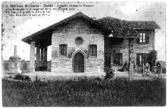
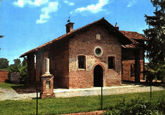

| |

cartolina stampata nei primi anni del 1900
(propriet� di Luigi Generani)

anno 1978 - panoramica |
 |
|
la quattrocentesca chiesa di Santa Maria |
|
visite pastorali |
1573 - San Carlo Borromeo
1749 - cardinale Pozzobonelli |
don Raffaele Inganni |
biografia
il cippo ai caduti della battaglia (1515)
le lapidi francesi |
|